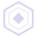
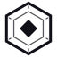
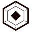

Бренд-книга // ноябрь 2026
Под землёй
тоже есть политика.
Project Kern — онлайн-шахта с другими игроками. Здесь копают породу, делят территорию кланами и пишут программы роботам. Бренд собран из того же, из чего собрана игра: базальт, тонкая линия, один сигнальный цвет.

Идея
Kern — ядро
Kern — по-немецки «ядро». Ядро — то, ради чего спускаются вниз, и то, вокруг чего собирается клан. В знаке оно — оранжевый ромб внутри двух граней шестигранника.
Добыча
Шахта без дна
Порода клетка за клеткой, кристаллы шести цветов, груз, который надо успеть продать.
Кланы
Общество под землёй
Клановые пушки держат территорию, ворота пускают только своих. Политика — не фон, а часть игры.
Программирование
Робот по коду
Программа из блоков: действия, условия, наблюдение, память. Робот работает, пока ты занят другим.
Слоган
Под землёй тоже есть политика.
Пишется с точкой, не сокращается. English: Politics runs deep. черновик перевода
Название
Project Kern
- Игра называется Project Kern — всегда полностью, обычным начертанием: полужирный Exo 2, без капса и разрядки.
- Kern без «Project» — только кодовое имя в коде, путях и файлах. Игрок его не видит.
- В кнопках название не пишется: вход — «Войти», загрузка — «Скачать для Windows». «Войти в мир Project Kern» звучит как сказка, а не как игра.
- Название не склоняется и не переводится: «в Project Kern», «игроки Project Kern».
Знак
шестигранник с ядром
Знак — прежний логотип игры, перерисованный в коде дизайна: внешняя грань толстой линией, внутренняя — волосяной, шесть засечек у вершин, ядро — единственное оранжевое место. Прямые углы и квадратные концы, без скруглений и градиентов.
«Правило» — договорённость, заложенная в шаблоны (art/compose/compose.css, .k-lockup): знак выше заглавной буквы названия на 18 %, отступ до названия — треть кегля. «По листу» — проверено глазами на листе «Знак в малых размерах» (иконки → в системе): у полного знака ниже 40 px внутренняя грань и засечки сливаются в серое пятно, малый держит контур толще и ядро крупнее. Файл — marks/svg/mark-small.svg.
Варианты



Знак и название
Project Kern- Основной знак на базальте, точечной сетке или затемнённом разрезе шахты.
- Одним цветом — на фото, светлом фоне, гравировке, вышивке.
- Знак без названия — иконка, аватар, водяной знак.
- Поворачивать, растягивать, скруглять углы, добавлять тень и свечение.
- Красить ядро другим цветом, кроме одноцветного варианта.
- Ставить на пёстрый фон без затемнения; добавлять иероглифы и подписи внутрь.
Цвет
базальт, кость, один сигнал
Базальт ведёт, кость читается, оранжевый появляется только там, где нужно действовать или беспокоиться: главная кнопка, тревога, непрочитанное. Выбранное и включённое — кость, не оранжевый. Цвет несут данные: кристаллы, деньги, груз.
Базальт63.6Мир и данные33.5Линии1.8Текст0.9Сигнал0.2
Замер, а не пожелание: 20 экранов стенда — те же, что у отпечатка стилей (kern-ui/tools/style-snap.html): загрузка, вход, меню, спуск, калибровка, HUD, чат, клан, профиль, навыки, инвентарь, настройки, программатор, карта, телефон, планшет, геймпад. Мир отделён маской: кадр снимается второй раз со спрятанным миром, всё остальное отнесено к ближайшему цвету палитры токенов. Вне игры базальт занимает 97–100 %, с открытым окном — 80–86 %, в HUD над миром мир — 82–87 %. Сигнал — 0.2 %: только главное действие и тревога. Текст мал по площади, потому что буквы тонкие: его вес держит контраст, а не доля.
Базальт
Кость — пять ступеней текста
Сигнал и состояния
Данные
Шрифты
три роли, open font license
Шахта №7. Клан DVM
Одна гарнитура на латиницу и кириллицу: в строке «Скачать Project Kern» буквы одной ширины и толщины. Прежний Tektur снят — его кириллическая «д» читалась как латинская g («Пog землёй»).
Копай породу, собирай кристаллы, пиши программы роботу и держи территорию вместе с кланом.
1184:902 · $14 850 · 67 % · 0.9.0 · fb8e0225
Шкала кеглей — общая с игрой
Коробка строки у всех гарнитур выровнена до 1.2 кегля (ascent 96 %, descent 24 %): фиксированные высоты строк в игре рассчитаны на неё. Китайский — системный запасной шрифт в конце каждого набора.
Микрографика
каждая деталь — с причиной
Мелкие детали взяты из промышленной маркировки и нужны, только когда несут данные или состояние. Декор без причины не ставится: пустые индексы, штрихкоды ни о чём, «прицелы» — убраны.
Одна форма панели везде: HUD, окна клиента, окна сервера. Главная кнопка срезана так же.
--notch: 10pxУглы пластины прочерчены светлее рамки — окно читается как деталь корпуса.
--ticks · --tick: 6pxПустое место шкалы и слота — косыми волосяными линиями, а не серым.
--hatchЗаполненное делится по 5 %: груз читается долями, а не «на глаз».
.meter--cargoФон экранов вне игры — шаг 16 px, половина клетки мира.
--dotsИнверсная метка раздела со скосом — так маркируют отсеки.
.sec-plateРезкий контраст: крупная цифра, единица мелко сверху.
Exo 2 + MonoКлан // банк
Моно капсом через «//», пунктир до края. Только цифры и названия разделов.
.w-kickerЧетыре системы
вид решает автор информации
У каждого элемента интерфейса есть автор: датчик робота, рука игрока, его записи или сеть. Автор решает вид. Общее у всех — палитра, три шрифта и форма панели.
Робот
Показания датчиков
Квант: точки и ячейки, крупная цифра с единицей. Прочность — 20 точек, груз — ячейки по 5 %.
Руки
То, что нажимает игрок
Клавиша: плоское поле, рамка 1 px, нажатое темнее, горячая клавиша на кнопке.
Дело
Записи игрока
Лист: заголовок, разделы «//», подпись ···· значение, вкладки чертой.
Сеть
От сервера и других игроков
Передача: строка источника сверху, время моно, текст — как прислали.
Движение
квант
Интерфейс двигается как показания датчика робота: ступенями данных, быстро, без пружин и отскоков. Груз прибывает ячейка за ячейкой, деньги досчитываются, окно разворачивается из линии рамки. Двигается только то, что сообщает об изменении; фон, рамки и микрографика стоят.
Три скорости и одна кривая
Отклик — 80 мс, окно — 120 мс, экран — 200 мс, всё ease-out. Ступень шкалы — 20 мс, досчёт числа — 250 мс. Тревога — две вспышки и ровный цвет, никогда по кругу.
Каталог по событиям игры и перенос в Unity 6.7 — дизайн-код → Движение.
Голос
коротко и по делу
- Подписи — как в обычных играх: «Играть», «Ограничение FPS», «Общая громкость». Без пояснений там, где хватает слова.
- Никакой техники в тексте для игрока: ни названий движков, ни форматов, ни протоколов.
- К игроку — на «ты», повелительным наклонением: «Спускайся», «Бури породу».
- Без пафоса и обещаний. Пишем то, что есть в игре: шахта, кланы, программа робота.
- Числа — как в игре: $9 850, 1 284, от десяти тысяч — сокращением не длиннее четырёх знаков: 12K, 4.7M, 85B.
Мир
клетка 32 px
Клетка мира — 32 px, и это константа. Фон обложек и витрин — игровой момент из настоящих клеток игры: штрек с дорогой и опорами, забой с жилой кристаллов, робот за работой, второй на подходе, над ними — постройка клана со складом. Сцена встаёт на сторону, свободную от текста; под текстом — затемнение базальтом.
Генератор — art/scene/scene.js: одно зерно — одна картинка, экспорт повторяется без изменений.
Интерфейс
кадры макета, не картинки
Всё, что выше, собрано в интерфейс игры. Кадры ниже — живой макет visual/kern-ui: те же файлы, что переносятся в клиент.
Открыть стенд целиком: kern-ui/index.html — все экраны, устройства и языки.
Применение
где бренд встречает игрока
Интерфейс
Дизайн-код
Токены, компоненты, состояния, адаптация и перенос в игру.
Выпуск
Иконки приложения
iOS, Android, macOS, Windows, Linux, веб.
Выпуск
Витрины магазинов
Steam, itch.io, Google Play, App Store: обложки, скриншоты, тексты.
Сайт
Страница загрузки
Все платформы, APK без магазина, проверка файла.
Каналы
Соцсети
Аватар, обложки Discord, Telegram, ВКонтакте, YouTube, X; пост и сторис.
Файлы
Экспорт
node visual/kern-brand/export/tools/export.mjs — все PNG, .icns, .ico и наборы иконок в export/renders/.